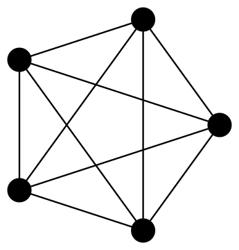
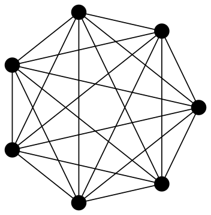
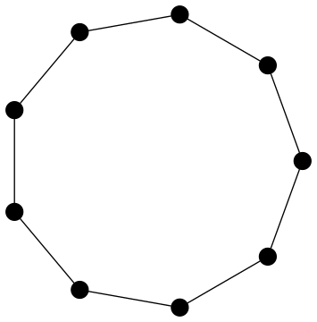
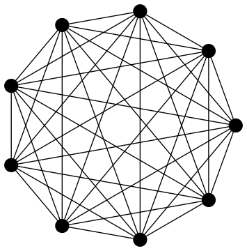
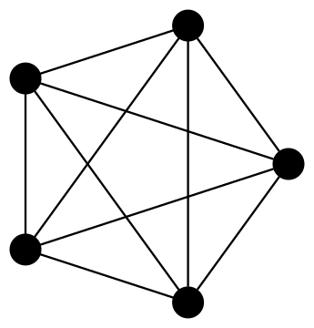
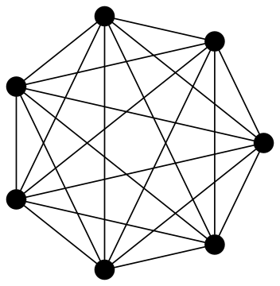
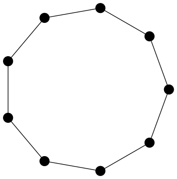
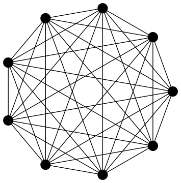

In Small Moore Graphs we developed moore, a filter for Moore graphs in graph6 format. The virtue of a program like moore is that it can be used in pipelines with existing programs to create new programs, as demonstrated in that earlier post.
In its present form (at time of writing) moore filters Moore graphs from a string of whitespace delimited graphs in graph6 format. So, to use it in a pipeline we have to ensure that the input is a single string, rather than raw standard input:
$ echo `geng -qc 4` | moore
C~Beyond this small design flaw, moore has a few other, as yet unresolved, issues. For example, it fails to filter the Moore graphs of order seven from a string of all non-isomorphic connected graphs on seven vertices.
$ echo `geng -qc 7` | moore
--anerror.Todebugthistry:debugmode(true);Rather than fix these problems immediately, in this post, we build an alternative implementation of the same program. Before, with moore we used Bash and Maxima. Here we will Python with both the NetworkX and igraph packages. The former for its graph6 handling and the latter for degree, girth and diameter calculations.
Iterating Over Graphs with Python
The resulting program, moore.py will read graphs in graph6 format from standard input and echo back those graphs which are Moore graphs.
One approach to working with standard input in Python is to use the stdin object from the sys module of the standard library. The stdin object has a readlines method that makes iterating over lines of standard input as simple as:
from sys import stdin
for line in stdin.readlines():
# Do somethingWe will expect here that each line is a graph6 format string. Inside the body of the loop we then need to do the following three things:
- parse the graph6 string into a graph object
G, - check if
Gis Moore graph or not and, if it is, - echo the original input
lineon standard output.
The first of these steps can be handled by the parse_graph6 function from NetworkX. The only processing we do on each line is to strip whitespace on the right using the rstrip string method.
The result of parsing is a networkx.Graph object g. As NetworkX does not implement girth computation we construct a second igraph.Graph object G from g.edges(), the list of edges of g.
from sys import stdin
from networkx import parse_graph6
from igraph import Graph
if __name__ == "__main__":
for line in stdin.readlines():
stripped_line = line.rstrip()
g = parse_graph6(stripped_line)
G = Graph(edges = g.edges())
moore = moore_gd
if moore(G):
print stripped_lineTesting for Moore graphs is done by a function moore (here pointing to one of three alternative implementations moore_gd, moore_nd and moore_gn). In the next section these three different functions are described.
Testing Moore Graphs
As seen in Small Moore Graphs there are, at least, three different ways to test whether a graph is a Moore graph or not. Those three methods are based on a theorem from Cameron (1994) which says that a graph is a Moore graph if it satisfies any two of the following three conditions:
- \(G\) is connected with maximum degree \(k\) and diameter \(d\);
- \(G\) has minimum degree \(k\) and girth \(2d + 1\);
- \(G\) has \(1 + k\sum_{i=0}^{d-1}(k - 1)^{i}\) vertices.
The third condition gives the maximum order of a \(k\)-regular graph with diameter \(d\). As this is a value we need in more than one place it gets its own function.
def moore_order(d, k):
"""
In a regular graph of degree k and diameter d the order is
at most moore_order(d, k).
"""
return 1 + k*sum([(k - 1)**i for i in range(d)])Now moore_gn, which is based on the combination of conditions 2 (involving girth) and 3 (involving order) above can be implemented for igraph.Graph objects as follows:
def moore_gn(G):
"""
Decide if G is a Moore graph or not, based on order and girth.
"""
return G.vcount() == moore_order((G.girth() - 1)/2, min(G.degree()))Remembering that every graph which satisfies conditions 2 and 3 above is also regular and connected might persuade us to consider some optimisations here. For example, as the minimum degree of vertices must be calculated we might as well also compute the maximum degree and avoid moore_order and girth calculations for any graph for which those values differ.
Similarly, we might also dismiss any graph which isn’t connected. Optimisations like these require some experimentation to determine their worth. Also, when programs like geng have already efficient ways to generated connected and regular graphs there will be circumstances when we only want the essential computation to be done. So at present we will concentrate on building a reliable implementation and leave such considerations for the future.
With disregard for optimisation in mind, the other testing functions based on the remaining combinations of conditions 1, 2 and 3. are also very simple one-liners. The girth and diameter variant looks like:
def moore_gd(G):
"""
Decide if G is a Moore graph or not, based on girth and diameter.
"""
return G.girth() == 2*G.diameter() + 1While the version based on order and diameter is:
def moore_nd(G):
"""
Decide if G is a Moore graph or not, based on order and diameter.
"""
return G.vcount() == moore_order(G.diameter(), max(G.degree()))Results
Now we can construct all Moore graphs on at most 10 vertices in a single pipeline involving geng and moore.py. Here the resulting graphs are visualised with circo from Graphviz after conversion to DOT format using listg:
$ options="-Gsize=5,5!
-Nfixedsize=true
-Nlabel=
-Nshape=circle
-Nheight=0.2
-Nwidth=0.2
-Nstyle=filled
-Nfillcolor=black"
$ seq 1 10\
| xargs -L1 geng -qc\
| moore.py\
| listg -y\
| circo -Tsvg -O $options    
   